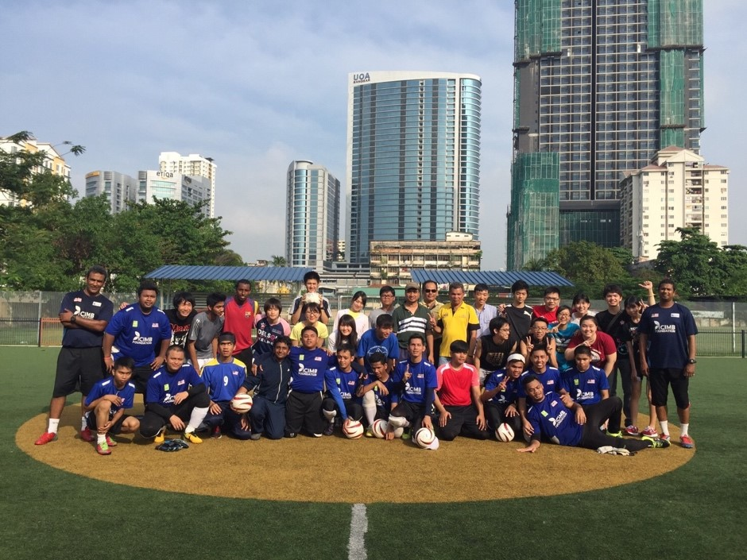
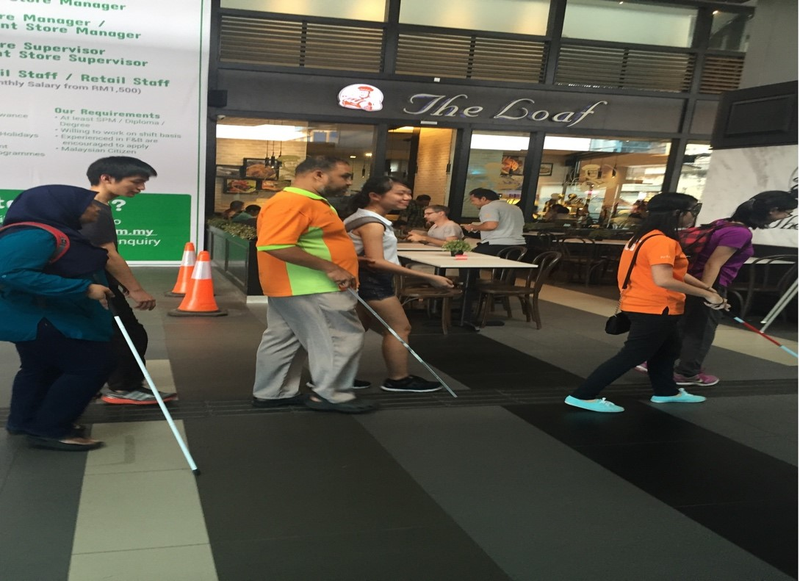
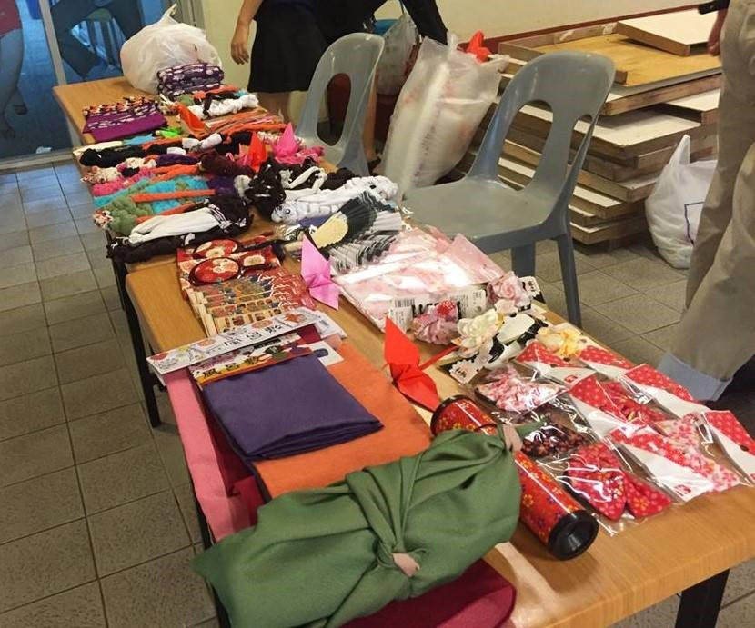
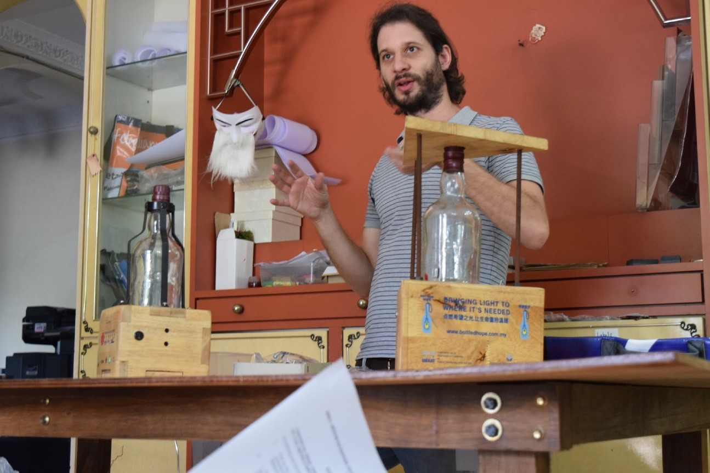
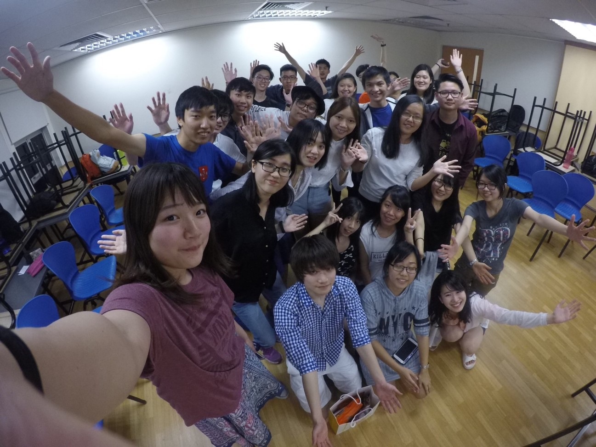

マレーシア・・・。カンボジア、ベトナムといった東南アジアの他の国々に比べるとインパクトが弱く、どのような国なのかイメージが湧きにくいかもしれません。
「多民族国家」と「発展度合い」がマレーシアの特徴です。シンガポールを除き、東南アジアでGDPという観点から見るともっとも先進国に近い国なのです。そこで我々は、マレーシアは発展の過程で他の国よりも早く日本と同じような問題に直面すると考え、プロジェクトを通じて我々はもちろん、より多くのマレーシアの人々に問題意識を持っていただくことで、社会問題を解決することを目標に掲げています。
プロジェクトについては、大きく分けて二つのプロジェクトを現地の大学生とともに行っております。障害者プロジェクトと環境プロジェクトです。とはいえこれだけでは漠然としすぎているので、各々について詳細を説明していきます。
１．障害者プロジェクト
現状は盲人の方と行っております。マレーシアでは、多くの人が街中で盲人の方を見かけた際に助けようとは思うものの、どうしていいかわからないから助けられない、あるいは杖を取り上げて先導してしまうなどの問題があります。これに対し、プロジェクトを通してまず盲人の方について関心を持っていただき、実際に目隠しをして歩くなどの実体験をしてどう助けるのが良いのかを知ってもらおうと考えております。昨夏はまずは自分たちが知ることを目的に、ブラインドサッカーと盲人の方との町歩きを行いました。なんとブラインドサッカーはマレーシア代表の選手達と行いました！今春は、現地の学生に知ってもらうと同時に自分たちもより深く理解すべく、目隠しをし、杖を使って歩くブラインドウォークを行いました。今夏は、現地の学生とともにプロジェクトを作り、一般の方々を巻き込んだ大規模なイベントを開催予定です。


左：ブラインドサッカーの様子 右：ブラインドウォークの様子
２．環境プロジェクト
マレーシアでは首都クアラルンプールでも街中でゴミが至る所にあるという問題に対し、エコフレンドリー・サステナビリティといった考えを広めることで解決しようとしています。昨夏は提携先のサンウェイ大学で、風呂敷・布草履などの環境に関する日本商品を扱ったバザーを行いました。この春は、より広い層の人々に届けるべく、環境に関するワークショップを大規模に行っているbijibijiを訪問させていただき、現在夏に提携してプロジェクトを行うことを検討中です。(bijibijiのURLですhttps://www.biji-biji.com/pages/projects 気になった方は是非ご参照を！)


左：バザーの様子 右：bijibiji訪問の様子
渡航中は、プロジェクトはもちろん、それ以外にも提携先の学生と交流をしたり、マラッカに行って多民族国家を肌で感じたりするといったことも行っています。

提携先のサンウェイ大学の学生との交流の様子
興味をもたれた方はぜひいらしてください！
JMSIリーダー 吉井誠